Tiden und Strömungen
Anmerkungen
Aktivierung von Tiden und Strom Anzeige
- Klicken Sie dieses Werkzeugleisten-Symbol
 zur Anzeige der Tiden Stationen.
zur Anzeige der Tiden Stationen. - Klicken Sie dieses Werkzeugleisten-Symbol
 zur Anzeige der Strom Stationen.
zur Anzeige der Strom Stationen. - Wichtig: Tiden und Strömungen werden nicht angezeigt, wenn nicht diese Werkzeugleisten-Symbole gewählt wurden.
Anzeige von Tiden
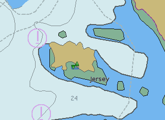
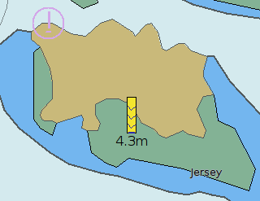
Der vertikale Balken enthält einige Informationen:
| 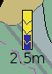 | Die Tide ist 2,5 m über dem Kartendatum. Der blaue Teil ist "Wasser". Das "V" im Balken bedeutet, daß die Tide zu Niedrigwasser hin abnimmt. |
| 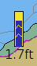 | Hier nimmt die Tide Richtung Hochwasser zu. |
| 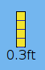 | Niedrigwasser sieht so aus. |
| 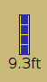 | Hochwasser sieht so aus. |
Mit Rechts-Klick auf das grüne Symbol oder den Balken oben erscheint die Anzeige der Tiden-Grafik:
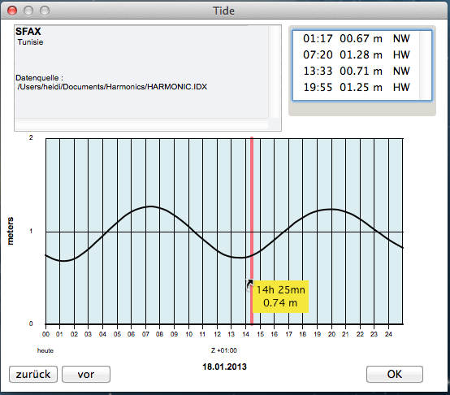
Die Anzeigen von Zeit und Wasserstand in dem gelben Kästchen folgen dem Mauszeiger beim Wandern über der Grafik. Die Zeitachse unten zeigt die Zeit, hier ist die Zeitzone "Z +01:00", was einer Stunde vor (Ost) UTC enspricht, auch noch GMT genannt.
Ist das grüne Symbol z.B. mit einem Layer überlagert, kann der Rechts-Klick ein Kontext-Menü hervorrufen:
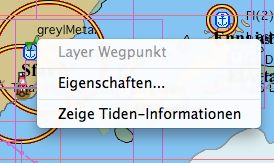
Anzeige von Strömungen
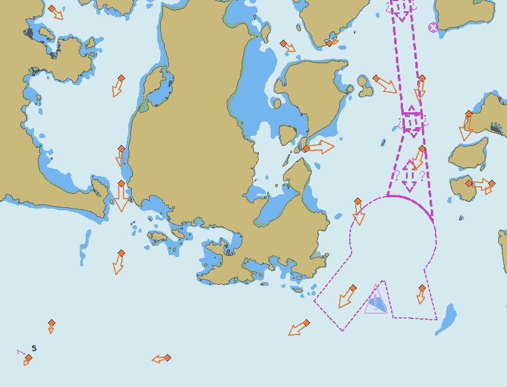
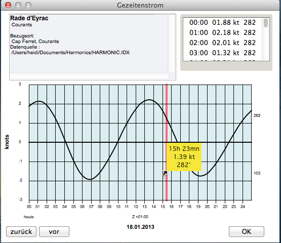
Die Daten in dem gelben Kästchen (Zeit, Geschwindigkeit und Richtung) folgen dem Mauszeiger beim Wandern überber der Grafik.
Verwenden von anderen Daten
Der Standard Datensatz für Tiden und Strömungen ist aus Copyright-Gründen begrenzt. Es gibt jedoch verschiedene Datensätze im Internet mit einem größeren Umfang, die teilweise sehr alt sind und auch Fehler enthalten können, von denen einige im OpenCPN Datensatz korrigiert wurden. Für einige Gegenden gibt es keine freien Datensätze. In OpenCPN können jedoch verschiedene Datensätze enthalten sein.
Xtide ist eine bekannte Tiden-Software und enthält regelmäßig überarbeitete .tcl Daten, die verwendet werden können (nur Bereiche US, UK und Niederlande). Sind zwei Stationen an genau dem gleichen Ort, ist nur eine sichtbar.
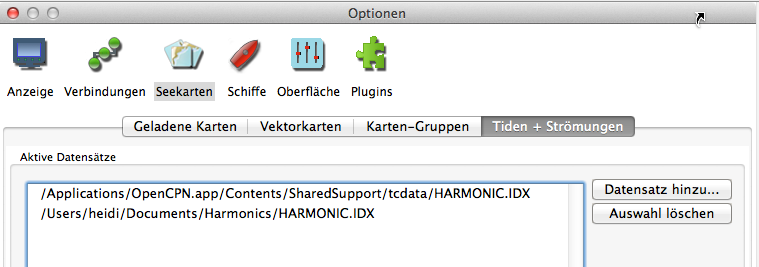
Gehen Sie zu Optionen/Seekarten/Tiden+Strömungen und fügen Sie einen neuen Datensatz hinzu. Die Tiden-Dateien können überall in Ihrem Dateisystem gespeichert sein, am Besten im Dokumenten-Bereich. Der erste Eintrag betrifft den mitgelieferten Standard-Satz, der zweite Eintrag wurde aus dem Internet geladen.